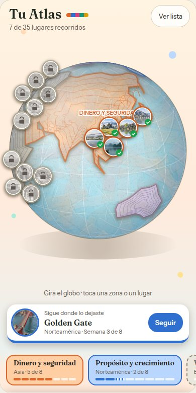
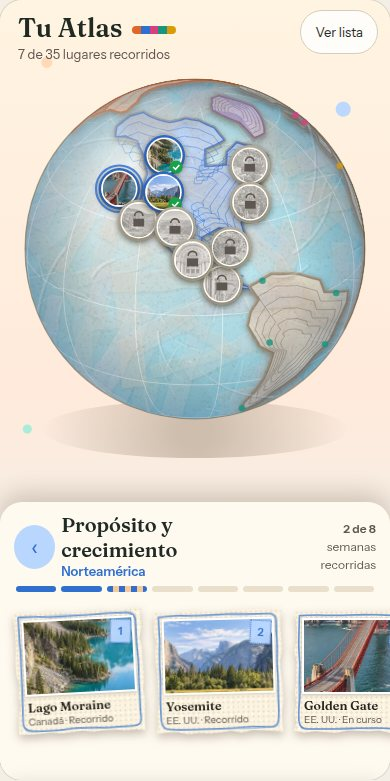
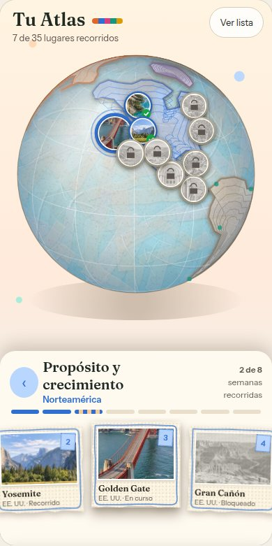
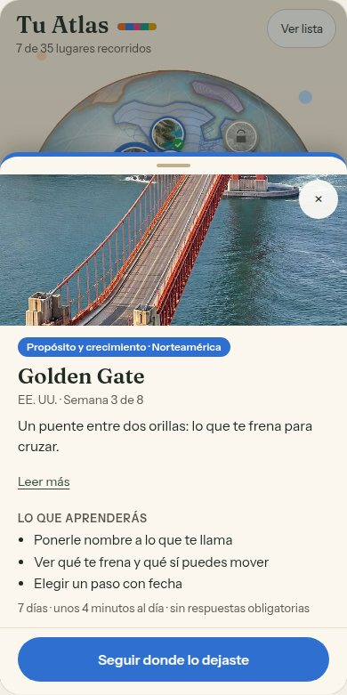
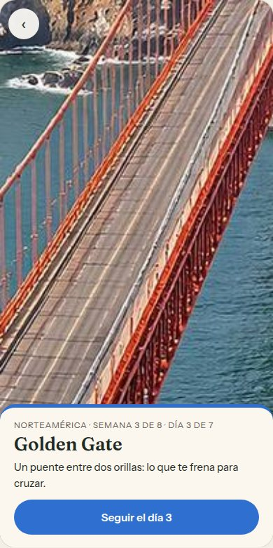
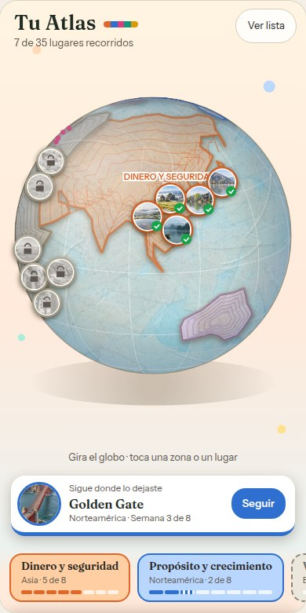
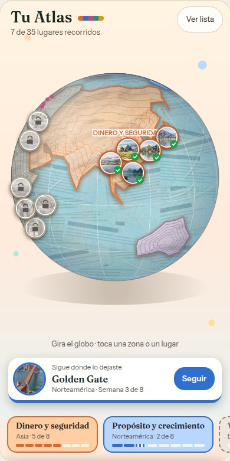
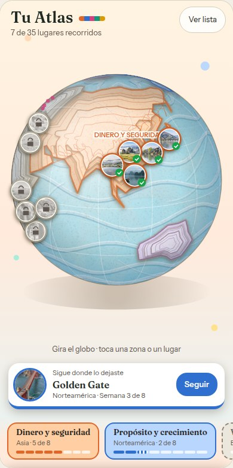
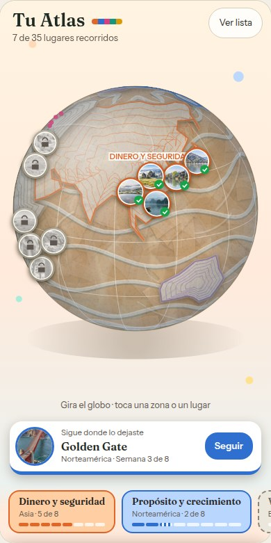
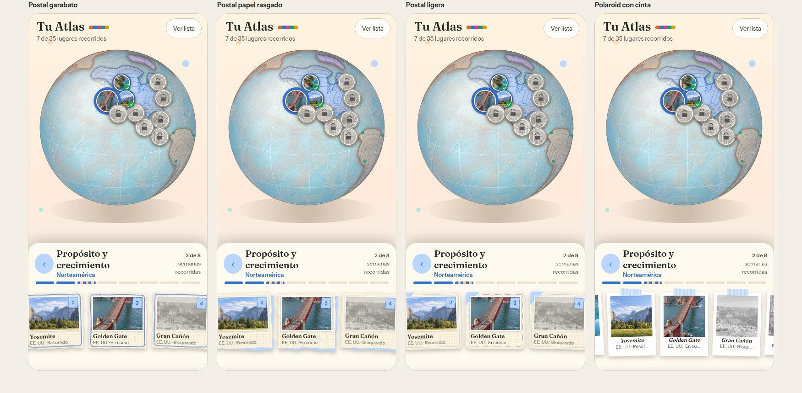

Exploración, nada pulido. Globo → zona (el globo se mantiene grande y salen las 8 semanas como postales pequeñas) → lugar → empezar. “Seguir donde lo dejaste” siempre a mano.
Globo con el nombre de cada área de la vida. Lo no empezado, en gris. Abajo: seguir donde lo dejaste y las 5 áreas con su progreso.

Tocas un área: el globo gira hacia ella y suben sus 8 semanas en postales. Las que faltan dicen “Pronto”.

Tocar una postal enciende su pin en el globo; tocarla otra vez abre el lugar.

Foto, qué aprenderás, leer más y el botón de empezar o seguir. Si está bloqueado, dice por qué.

Pantalla de llegada al día, antes de entrar al recorrido.

Sin arcoíris: el mar es de un solo color y la textura es de papel, no de colores. Las áreas de la vida mantienen su color solo en tierra, nombre y pines. Arriba hay un selector “Globo” y “Comparar globos”.
Tiras de papel crema sin teñir sobre un mar azul suave. Lo más cercano a un globo de papel maché hecho a mano.

Tiras de periódico con líneas de texto bajo un azul translúcido; tierra con pinceladas.

Cada continente son capas de papel apiladas con sombra; el mar lleva olas de papel.

Mar de papel kraft (cartón) con olas; tierra crema. Cálido y artesanal, menos “mapa”.

Mismo contenido, altura baja para que el globo siga grande. Se quitó el borde rayado de correo aéreo (muy recargado) y se probaron tres postales más suaves: garabato (borde rasgado y marco dibujado a mano), papel rasgado (dos capas, una de color detrás) y ligera (marco punteado y esquina de cinta). También hay polaroid, boleto y sello de pasaporte.
